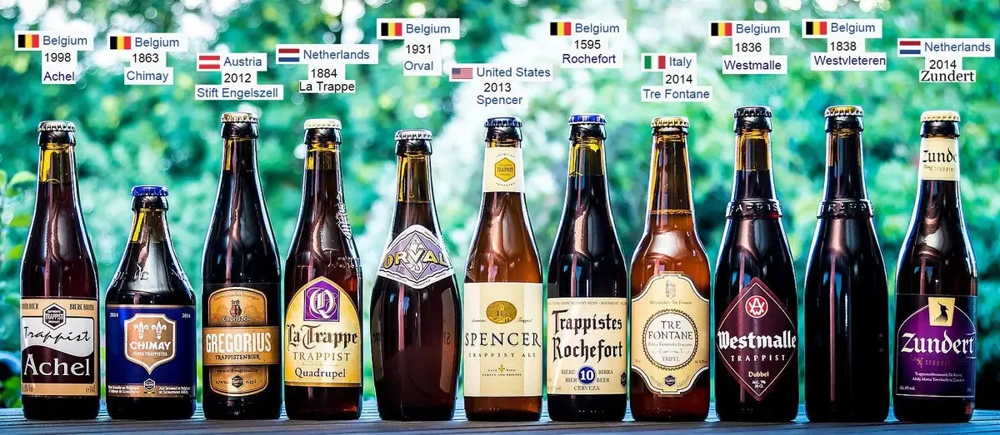

아직 펼치지 않은 카드기도하고 일하는 사람들 · 6트라피스트 맥주와 수도원 산물‘트라피스트 맥주’는 맛의 이름이 아니에요. 그럼 무엇을 뜻할까요? 수도자가 떠나면 이 이름은 어떻게 될까요?수도원에서 만드는 음료와 치즈가 있대!
2015년 8월 → 2026년벨기에·네덜란드·오스트리아·미국·이탈리아의 수도원
트라피스트 맥주와 수도원 산물
2015년 여름, 그때 인정받은 트라피스트 맥주 열한 병이 한 줄로 섰어요. ‘트라피스트’는 맛이 아니라 만드는 사람의 이름이에요. 병을 하나씩 눌러, 11년 뒤 그 이름들이 어떻게 되었는지 살펴보세요.
수도원 열한 곳에서 만든 병이 줄을 섰어. 하나씩 눌러 보면, 수도사들이 아직 거기 있는지 알 수 있대!
검수 전 시안이에요(기준서 1판 보탬 11). 표시의 조건과 지금의 맥주 목록은 국제 트라피스트 협회 누리집(2026년 11월 18일 확인)을, 아헬과 베스트블레테렌 이야기는 보도와 수도원 보도자료를 따랐어요. 상상은 ‘눈 감고 상상해 보기’에만 썼어요.
시안 확인용카드 단계 미리 보기
1
열한 병, 11년 뒤
2015년 8월, 그때 인정받은 트라피스트 양조장 열한 곳의 맥주가 한 줄로 섰어요. ‘트라피스트’는 맛의 이름이 아니라, 엄률 시토회 수도자들(트라피스트)이 만든 것이라는 이름이에요.
국제 트라피스트 협회는 세 가지를 모두 지켜야 ‘진짜 트라피스트 산물’ 표시를 줘요. 수도원 바로 곁에서 만들 것, 수도자들이 지켜보며 만들 것, 번 돈은 공동체의 살림과 수도회 안의 나눔, 어려운 이웃을 돕는 데 쓸 것. 표시는 5년마다 다시 받아요.
베네딕도 규칙서 57장도 수도원에서 만든 것을 팔 때 욕심내지 말고, 세상 값보다 조금 싸게 팔라고 해요. 그리고 ‘모든 일에서 하느님이 영광을 받으시도록’이라는 말로 끝나요.
병을 하나씩 눌러, 11년이 지난 2026년에 그 이름이 어떻게 되었는지 살펴보세요.
병을 하나씩 눌러, 11년 뒤 그 이름이 어떻게 되었는지 살펴보세요.
2015년 8월에 인정받은 트라피스트 양조장 열한 곳의 맥주. 병 위의 깃발·해·이름은 사진가가 붙였어요 · 사진: Philip Rowlands · CC BY-SA 4.0 · 위키미디어 공용
그림 위의 숫자나 아래 번호를 눌러 보세요.
열한 병을 다 살펴보았어요. 2015년의 열한 곳 가운데 일곱 곳이 2026년에도 맥주에 트라피스트 이름을 붙여요.
“아헬에는 이제 살아 있는 공동체가 없어서, 우리는 그 로고를 더는 쓸 수 없어요.”
베스트말레 수도원장, 2021년(EWTN 뉴스 보도) · 영어를 이 안내서가 옮김
병을 하나씩 눌러 봐. 수도사들이 아직 그곳에 있으면, 병에 ‘트라피스트’ 이름을 붙일 수 있어.
물어보기라벨이 없는 병은 어느 것일까?
눈 감고 상상해 보기
해 질 녘 수도원 양조장이에요. 커다란 구리 솥에서 김이 오르고, 수도복 입은 형제가 온도를 살펴요. 종이 울리자 그는 국자를 내려놓고 성당으로 걸어가요. 병 속 맥주는 몇 주를 기다려 익어 가요. 이 병이 누군가의 식탁에 오를 때쯤, 형제는 또 저녁 기도를 드리고 있겠지요.
눈을 감아 봐. 커다란 솥에서 김이 모락모락. 종이 울리면 수도사님이 하던 일을 내려놓고 기도하러 가.
나의 자리
내가 하는 일에 내 이름을 붙인다면, 그 이름은 무엇을 약속하는 걸까요?
내가 만든 물건에 내 이름을 붙인다면 무엇을 만들고 싶어?
마음에 닿는 한 줄을 고르거나 직접 써 보세요. 한 줄을 남기면 이 자리의 도장이 찍혀요. 이 기기에만 저장돼요.
더 깊이
궁금한 칸만 펼쳐 읽어도 괜찮아요.
알고 보면
규칙서 57장 장의 이름은 「수도원의 기술자들」이에요. 솜씨 있는 수도자는 원장의 허락을 받아 겸손하게 일하고, 솜씨를 뽐내면 그 일에서 물러나요. 파는 사람은 수도원을 속이지 말고, 값에 욕심을 섞지 말라고 해요.
모든 일에서 57장 끝의 말은 베드로전서 4장 11절에서 왔어요. 무슨 일이든 하느님이 영광을 받으시게 하라는 말씀이에요.
열두 곳의 산물 2026년 협회 누리집에는 맥주 말고도 치즈(몽데카·시메이·오르발·베스트말레), 초콜릿(브라질 보아 비스타), 잼(벨기에 클라를란트), 리큐어(카르데냐·트레 폰타네)까지 열두 곳의 산물이 올라 있어요.
라벨 없는 75년 베스트블레테렌은 벨기에에서 라벨 없이 팔던 단 하나의 맥주였어요. 2022년 8월 12일 수도원 보도자료가 ‘75년 넘게 이어진 한 시대의 끝’이라며 라벨을 알렸어요.
함께 보면 좋은 카드 이 세트의 ‘기도하고 일하라’ 카드는 수도원의 하루를, 몬테카시노 카드는 규칙서가 쓰인 곳을 보여 줘요.
기록마다 다른 점
아헬 맥주는 아직? 2021년 보도에서 베스트말레 수도원장은 맥주를 여전히 지켜보며 빚는다고 했지만, 같은 기사 안에 ‘이제 문을 닫은 옛 아헬’이라는 말도 있어요.
열한 곳의 해 사진에 붙은 해(1595·1836·1838…)는 사진가가 적은 것이라, 수도원마다 양조를 시작한 해와 다를 수 있어요.
직접 가 보기
확인한 날 · 2026년 11월 18일 · 바뀌기 쉬운 정보라 정기적으로 다시 확인해요
수도원 안이 아니라 수도원 근처 카페와 가게에서 맛보는 곳이 많아요. 곳마다 여는 때가 달라서, 가기 전에 그 수도원 누리집을 꼭 확인해 주세요.
열한 병 살펴보기 금박
사진 속 여섯 곳을 모두 눌러 읽으면 금박이 입혀져요.
사진 속 여섯 곳을 모두 찾아 읽기
열한 병 이야기를 끝까지 채색
아이와 함께 끝까지 보면 카드가 채색돼요.
아이와 함께 ‘영화처럼 보기’를 끝까지 보기
근거 보기 (6)
- 국제 트라피스트 협회 「맥주」 — 회원 수도원 열 곳이 자기 맥주를 빚어 팜: 라 트라프(코닝스호번), 시메이(스쿠르몽), 로슈포르, 베스트말레, 베스트블레테렌(성 식스투스), 몽데카, 카르데냐, 마운트 세인트 버나드, 오르발, 트레 폰타네(담 안에서 빚는 맥주 세 가지). 아헬·엥겔스첼·스펜서·준더르트는 목록에 없음
- 국제 트라피스트 협회 「ATP 라벨」 — 세 조건(수도원 바로 곁, 수도자의 감독, 번 돈은 공동체·수도회 안의 나눔·개발과 자선), 허가 5년, 열두 곳과 산물
- EWTN 뉴스 「아헬, 마지막 수도자들이 떠나 더는 트라피스트 맥주가 아니다」(2021년 3월 16일) — 2021년 초 마지막 수도자들이 베스트말레로, 베스트말레가 지켜보며 계속 빚음, “아헬에 살아 있는 공동체가 없어 로고를 쓸 수 없다”
- 트라피스트 베스트블레테렌 보도자료(2022년 8월 12일) — 라벨 없는 병, 법이 정한 정보를 병뚜껑에, 75년 넘은 한 시대의 끝
- 베네딕도 규칙서 57장 「수도원의 기술자들」(CCEL) — 겸손하게, 원장의 허락, 교만하면 물러남, 속이지 말 것, 욕심 없이 세상보다 조금 싸게, 모든 일에서 하느님이 영광을 받으시도록(베드로전서 4장 11절)
- 위키미디어 공용 파일 설명(API로 확인): 2015년 8월에 인정받은 트라피스트 양조장 열한 곳의 맥주(사진 Philip Rowlands)
그림·사진·소리 출처
‘처음 만나는 기독교 문화’의 깊은 카드예요. 카드 단계와 남긴 글은 이 기기에만 저장돼요.